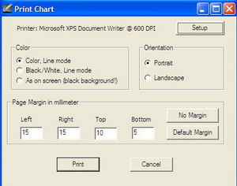
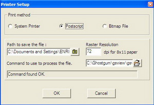

Het Bestand menu omvat de volgende mogelijkheden
De nieuwe Versie 3 van Cartes du Ciel maakt het je mogelijk om vensters met verschillende sterrenkaarten te openen. Het voordeel hiervan is dat je nu tegelijkertijd kaarten kunt laten weergeven voor verschillende lokaties, tijden of weergave-instellingen.
Je kunt de kaarten organiseren met het Venster menu. Je kunt de kaarten maximaliseren, minimaliseren, sluiten, of van afmetingen veranderen door aan de randen te slepen.
Hiermee kun je een eerder opgelsagen kaart openen met zijn eigen instellingen voor plaats en tijd.
Hiermee kun je een actieve kaart opslaan als een bestand zodat je die in de toekomst weer kunt openen via de Open mogelijkheid.
Dit sluit de actieve kaart, alleen wanneer je meer dan één kaart binnen het programma open hebt.
Dit zet de kaart en de opties terug naar de instellingen van de laatst opgeslagen configuratie. Het resultaat is hetzelfde als wanneer je de kaart zou sluiten zonder de instellingen op te slaan gevolgd door het herstarten van het programma.
Hiermee kun je informatie verkrijgen over bepaalde astronomische fenomenen binnen een gegeven tijdsperiode.
Dit venster is samengesteld uit zeven delen:
Dit start het Variable Stars Observer programma.
Hiermee sla je de actieve kaart op als een afbeelding. Je kunt hierbij kiezen uit de PNG, JPEG of BMP formaten voor je bestand.

Het Afdrukken dialoogvenster maakt het je mogelijk om je instellingen te kiezen voor je 'printer-doel'. Het maakt daarbij niet uit of het een echte printer is of een bestand.
Je kunt de afdruk maken in de kleuren zoals op je scherm, in zwart op wit of in wit op zwart (met een zwarte hemelachergrond). Je kunt ook de oriëntatie en de marges van het papier instellen.
 Hiermee kun je binnen CdC instellingen maken voor je printer zodat het programma je kaart kan afdrukken. Je hebt drie mogelijkheden:
Precies dat, je sluit hiermee Cartes du Ciel.
{kind=link}
{kind=link}